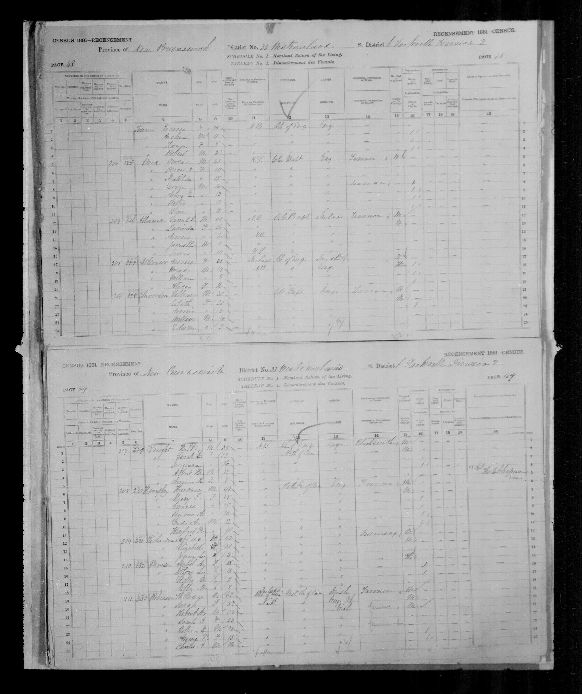
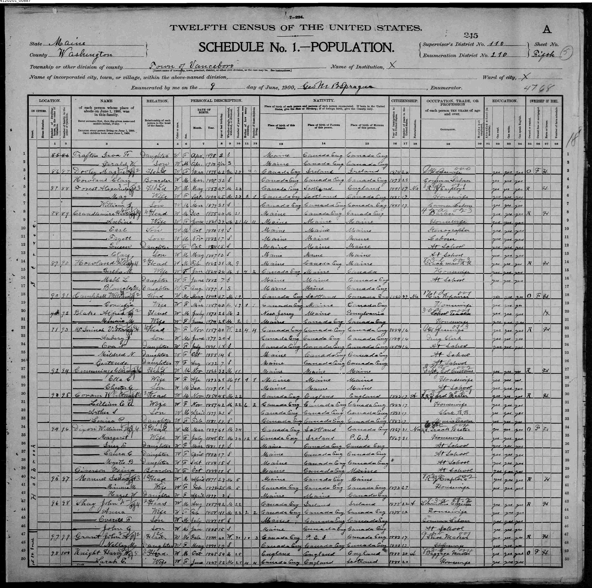
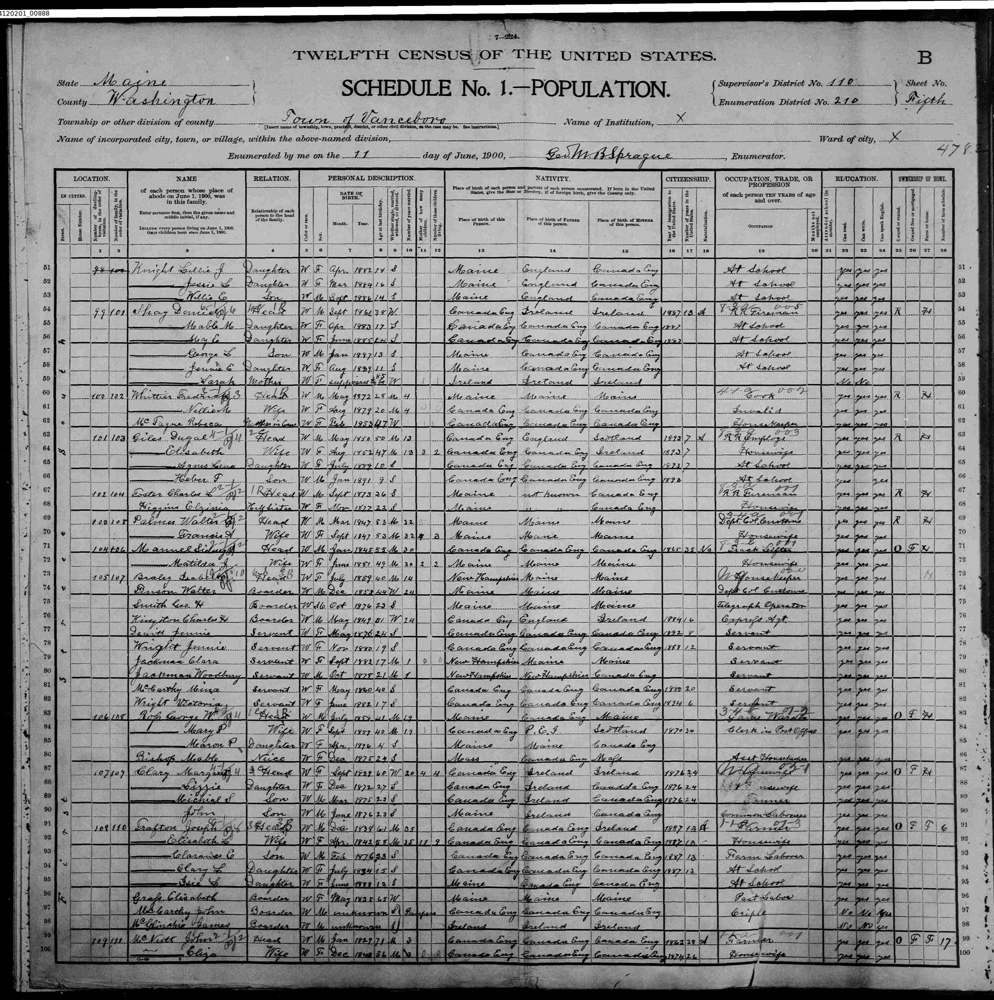

Extract from the 1881 census of Sackville, province of New Brunswick, Canada. The pertinent information begins on line 1 of the second page.
The census indicates that H.W. Knight, age 39, was the head of a household that included his wife Sarah E. Knight, age 32, Georgiana Knight (relationship unknown), age 16, Albert H. Knight (relationship unknown), age 12, and Annie M. Knight, his daughter, age 1.

First page - click on photo to see second page
Extract from the 1900 census of Vanceboro, Maine. The pertinent information begins on the last two lines and continues on the next page.
The census indicates that Harry W. Knight, age 54, was the head of a household that include his wife, Sarah E. Knight, age 52, his daughters Lillian J., age 18, and Jessie L., age 16, and his son Willie E., age 14. The census also indicates that Harry W. and Sarah E. Knight had been married for 25 years in 1900.

Second page
Extract from the 1900 census of Vanceboro, Maine - second page. The pertinent information is on the first three lines.